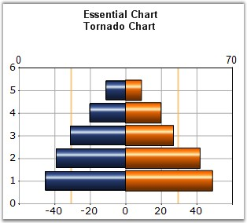

The Tornado chart is a bar chart which shows the variability of an output to several different inputs. Variability is displayed using relative lengths of bars across a range. It is mainly used in sensitivity analysis. It shows how different random factors can influence the prognostic outcome.

Figure 49: Chart displaying a Tornado Chart
Chart Details
|
Details | |
|
Number of Y values per point |
2 |
|
Number of Series |
One or more |
|
Cannot be Combined with |
Pie, Bar, Polar, Radar |
The Tornado series can be added to the chart using the following code.
|
[C#]
// Create chart series and add data points into it. ChartSeries series = this.ChartWebControl1.Model.NewSeries("Series 0", ChartSeriesType.Tornado);
series.Points.Add(1, 0, 48); series.Points.Add(2, 0, 42); series.Points.Add(3, 0, 27); series.Points.Add(4, 0, 20); series.Points.Add(5, 0, 9);
// Add the series to the chart series collection. this.ChartWebControl1.Series.Add(series);
ChartSeries series2 = this.ChartWebControl1.Model.NewSeries("Series 1", ChartSeriesType.Tornado);
series2.Points.Add(1, 0, -45); series2.Points.Add(2, 0, -39); series2.Points.Add(3, 0, -31); series2.Points.Add(4, 0, -20); series2.Points.Add(5, 0, -11);
this.ChartWebControl1.Series.Add(series2); |
|
[VB.NET]
' Create chart series and add data points into it. Dim series As ChartSeries = Me.ChartWebControl1.Model.NewSeries("Series 0",ChartSeriesType.Tornado)
series.Points.Add(1,0, 48) series.Points.Add(2, 0, 42) series.Points.Add(3, 0, 27) series.Points.Add(4, 0, 20) series.Points.Add(5, 0, 9)
' Add the series to the chart series collection. Me.ChartWebControl1.Series.Add(series)
' Create chart series and add data points into it. Dim series2 As ChartSeries = Me.ChartWebControl1.Model.NewSeries("Series 0",ChartSeriesType.Tornado)
series2.Points.Add(1,0, -45) series2.Points.Add(2, 0, -39) series2.Points.Add(3, 0, -31) series2.Points.Add(4, 0, -20) series2.Points.Add(5, 0, -11)
Me.ChartWebControl1.Series.Add(series2) |